Donc j'ai joué avec GLM 5.2 dans CloudCode toute la journée, et c'est incroyable. C'est plus rapide, c'est nettement moins cher, et ça s'intègre vraiment très bien dans l'environnement de CloudCode. Ça a si bien marché, en fait, que ça a édité toute cette intro que vous êtes train de regarder en ce moment, de la vidéo brute jusqu'à ce que vous voyez. Donc dans la vidéo d'aujourd'hui, je vais vous montrer à quel point c'est rapide et facile de configurer GLM 5.2 dans CloudCode, alors ne perdons pas de temps et allons directement dans la vidéo. Donc évidemment, cette intro n'était pas parfaite, mais c'était littéralement un seul prompt. C'était un seul "slash goal" juste ici. Ça a pris un peu plus d'une heure, une heure et quart pour, vous savez, une vidéo de 23 secondes. Donc ça a pris un tout petit peu
Interface & Outils : VS Code, navigateur web, terminal intégré.
Contenu textuel & Code : Code source, arborescence de projet, terminal avec barre de progression de GLM-5.2 et prévisualisation web locale.
Action / Démonstration : Présentation de l'environnement de développement et démonstration de l'intégration du modèle GLM-5.2 dans l'éditeur.
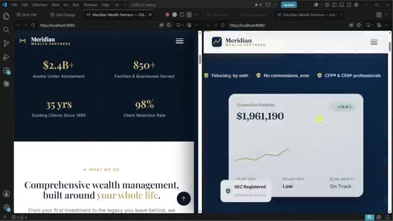
🔍 Agrandir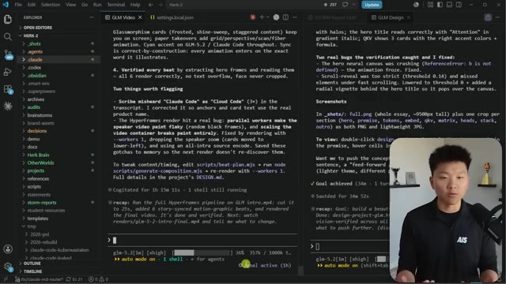
🔍 Agrandirlong, mais c'était la session pendant laquelle nous l'avons fait. C'était GLM 5.2, 1 million de contexte. Comme vous pouvez le voir juste ici, il a utilisé environ 357 000 jetons. Mais à mesure que je l'essaie de plus en plus, il y a certaines tâches où il termine beaucoup plus vite qu'Opus. Et puis il y en a d'autres comme celle-ci où Opus aurait fait cela beaucoup plus rapidement. Je vais donc vous montrer exactement comment faire la configuration. Mais avant cela, laissez-moi juste vous montrer quelques-unes des choses avec lesquelles j'ai joué et ce que GLM a été capable de faire. C'est donc vraiment très solide en matière de design. Je veux que vous regardiez juste ici et que vous voyiez laquelle de ces options, selon vous, a été conçue par GLM 5.2 et laquelle a été
Interface & Outils : VS Code (éditeur de code), terminal intégré
Contenu textuel & Code : Documentation Markdown de projets vidéo, fichiers de configuration et métriques de consommation de jetons (glm-5.2 [1m] 357k / 1000k).
Action / Démonstration : Navigation et présentation comparative des interfaces web générées par GLM-5.2 et visualisation des statistiques de jetons dans le terminal.
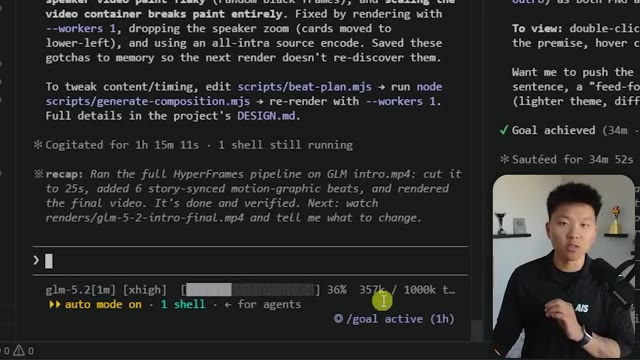
🔍 Agrandir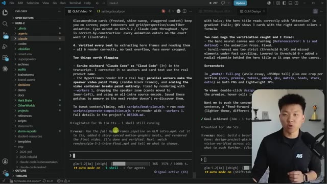
🔍 Agrandir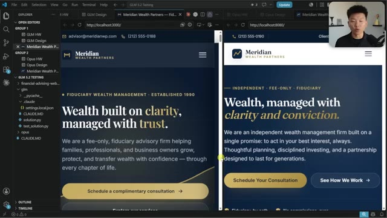
🔍 Agrandirconçu par Opus. Donc, en faisant défiler un peu vers le bas ici, vous pouvez voir que nous avons, vous savez, une image de marque de style similaire et c'est évidemment la même entreprise, mais nous avons des éléments sur les deux qui sont très similaires. Nous avons toutes ces choses qui apparaissent également de manière dynamique de chaque côté. Et il y a même un appel à l'action en bas. Je pense que l'indice révélateur ici, c'est que ce côté droit était Opus parce qu'il a ces F bizarres qu'il adore faire. Il adore cette police. Mais dans les deux cas, ils sont tous les deux très solides pour une invite unique, surtout si l'on considère le fait que vous obtenez ce résultat pour environ cinq fois moins cher. Ce sont donc les sessions de terminal réelles où nous avons fait ces conceptions de sites Web.
Interface & Outils : Visual Studio Code avec double panneau de prévisualisation web local (localhost:3000 et localhost:8080).
Contenu textuel & Code : Interfaces web de l'entreprise Meridian Wealth Partners montrant des sections sur la gestion de patrimoine, des statistiques et des formulaires de contact.
Action / Démonstration : Le présentateur compare visuellement le design et l'image de marque de deux versions différentes d'un site web généré par IA.
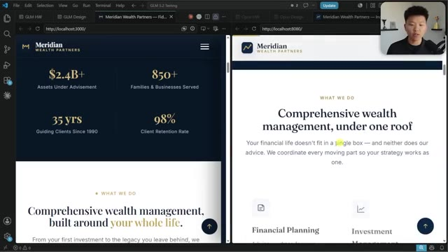
🔍 Agrandir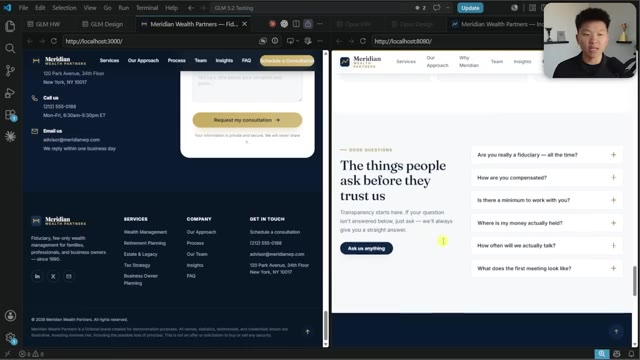
🔍 Agrandir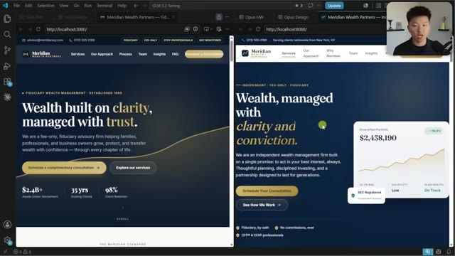
🔍 AgrandirSur le côté gauche avec GLM, nous avons réussi en trois minutes et 59 secondes. Sur le côté droit avec Opus, nous avons réussi en 14 minutes et 59 secondes. Et non seulement le côté gauche avec GLM a utilisé moins de jetons, mais son coût par jeton est aussi environ cinq fois moins cher. Donc dans ce cas, c'était plus rapide et c'était beaucoup moins cher et c'était un résultat relativement similaire. J'ai aussi lancé cette invite de chaque côté où je leur ai donné un devoir. Vous pouvez voir ici, nous avons GLM et puis ici, nous avons Opus 4.8. J'ai demandé à Codex de créer le devoir juste pour qu'il n'y ait pas de contamination croisée ou quelque chose comme ça. Et puis quand ils ont eu fini, j'ai demandé à Codex de juger les deux résultats et de nous dire ce qu'il en pensait. Maintenant dans ce cas, il a dit que l'agent deux, qui
Interface & Outils : VS Code avec interface en écran partagé (split view) et terminaux intégrés.
Contenu textuel & Code : Rapports de vérification de sites web (HTML, CSS, JS), instructions de tâches de programmation en Python (fonction reconcile_register avec la bibliothèque standard) et barres de progression de jetons.
Action / Démonstration : Comparaison des performances de deux agents IA concurrents (GLM 5.2 et Opus 4.8) exécutant la même tâche de développement web en temps réel.
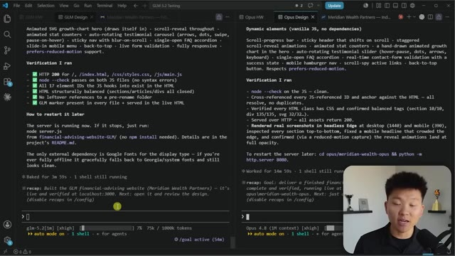
🔍 Agrandir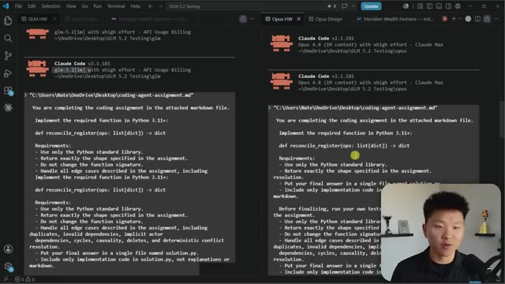
🔍 Agrandirétait Opus, était meilleur parce qu'il gérait un cas particulier subtil que le premier agent avait manqué, à savoir des enregistrements en double avec des valeurs comme vrai versus un ou un versus 1,0. Donc, en bref, le premier agent, GLM 5,2, était bon, mais le deuxième agent ici était plus précis. Et de manière générale, ce que je ressens à ce sujet jusqu'à présent, c'est que GLM 5,2 est vraiment solide, et qu'il est plutôt rapide pour la plupart des tâches qui ne nécessitent pas un raisonnement poussé. Évidemment, en fin de compte, Opus 4,8 est un meilleur modèle. C'est un modèle fermé. Mais en réalité, demandez-vous à quelle fréquence vous avez réellement besoin de la puissance d'Opus. Probablement seulement peut-être 10 à 20 %, si ce n'est moins, des tâches que vous faites toute la journée. Vous pourriez
Interface & Outils : Éditeur de code (VS Code / interface similaire)
Contenu textuel & Code : Texte de verdict détaillant les performances de l'agent 2 par rapport à l'agent 1 concernant les types de données (True vs 1 vs 1.0).
Action / Démonstration : Présentation comparative des résultats d'évaluation des agents textuels.
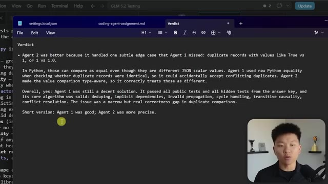
🔍 Agrandir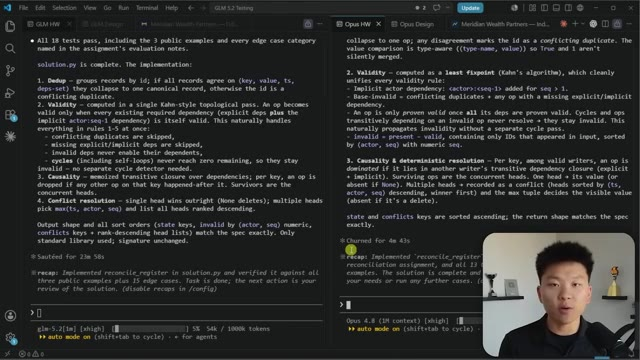
🔍 Agrandirprobablement gérer 80 % ou plus de votre travail intellectuel avec quelque chose comme GLM 5.2 ou quelque chose de plus semblable à Sonnet 3.7. C'est donc vraiment une compétence clé alors que nous entrons dans l'avenir de l'IA, qui consiste à comprendre quels modèles utiliser pour chaque tâche. Mais voici un exemple où vous pouvez voir qu'Opus a pris environ cinq minutes et que GLM 5.2 a pris environ 24 minutes. Et c'était moi sur un forfait à 60 dollars par mois pour Z.ai pour GLM 5.2.
Interface & Outils : Éditeur de code (type VS Code / Cursor) avec interface en double volet et navigateur web (tableau de bord d'utilisation d'une plateforme d'IA).
Contenu textuel & Code : Code source Python de tests de validation, rapports de récapitulation d'exécution d'agents, et statistiques de consommation de tokens et de quotas (54% de quota sur 5 heures).
Action / Démonstration : Le présentateur commente l'utilisation de différents modèles d'IA (GLM 5.2 et Opus) et montre les interfaces de suivi et de test associées.
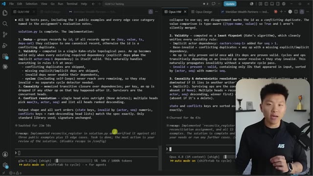
🔍 Agrandir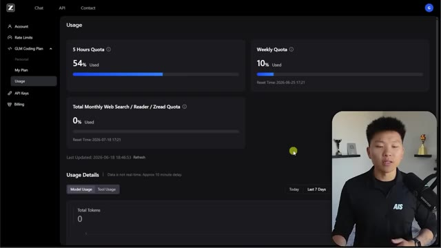
🔍 AgrandirEt j'ai joué avec ça pendant, c'était environ quatre ou cinq heures d'affilée à littéralement insister dessus, cinq sessions différentes ouvertes, en testant GLM 5.2. Et mon quota de cinq heures est dépassé d'un peu plus de la moitié. Et mon quota hebdomadaire est utilisé à environ 10 %. Je parlerai de la facturation et de la façon de configurer tout ça dans une petite seconde. Laissez-moi vous montrer ce que j'ai fait d'autre avec. J'ai donc fait quelques autres invites de type "slash goal" et je déteste quand le terminal fait ça, mais la première que j'ai faite, j'ai tapé "slash goal" et j'ai littéralement dit du genre, hé, fais preuve de créativité, montre-moi à quel point tes compétences en design sont bonnes, et construis-moi juste ce que tu veux. Fais-moi simplement un document HTML. Et voici ce que ça m'a donné. Ça m'a donné l'anatomie de l'attention. Vous pouvez voir que nous avons
Interface & Outils : Interface web de gestion de plan de codage GLM, VS Code (éditeur de code et terminal intégré)
Contenu textuel & Code : Tableaux de bord de quotas (5 Hours Quota: 54% used, Weekly Quota: 10% used) et interface de terminal avec des commandes textuelles et des prompts de recherche.
Action / Démonstration : Consultation du tableau de bord d'utilisation des quotas d'IA et affichage du code/terminal dans l'éditeur.
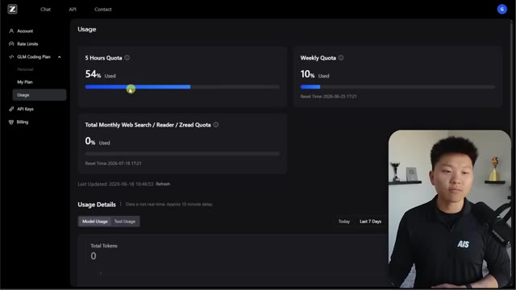
🔍 Agrandir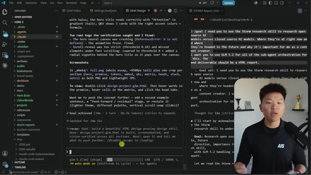
🔍 Agrandiron a comme des étoiles qui bougent un peu en arrière-plan. Ça a l'air évidemment un tout petit peu stylé codé ici, mais pas trop mal. Et en faisant défiler vers le bas, on peut voir qu'un modèle de langage n'a pas de livre de grammaire ni de dictionnaire. Et puis sur cette chose, l'animal n'a pas traversé la rue parce qu'il était trop fatigué. C'est un peu comme un élément interactif ici. On voit le mot de la requête et ensuite on voit vers quoi il pointe. Donc fatigué pointait vers il. Il pointait vers l'animal. Traversé pointait vers la rue. Donc c'est plutôt intéressant. D'abord, la phrase est découpée. Chaque token obtient une place dans l'espace. Donc on a un tout petit peu comme un graphique de relations ici. On a des graphiques ici en bas et
Interface & Outils : Navigateur web affichant une page interactive de visualisation d'un modèle de langage.
Contenu textuel & Code : Texte explicatif ("A language model has no grammar book...") et phrase interactive "The animal didn't cross the street because it was too tired."
Action / Démonstration : Navigation et survol interactif des mots pour démontrer le poids de l'attention entre les termes.
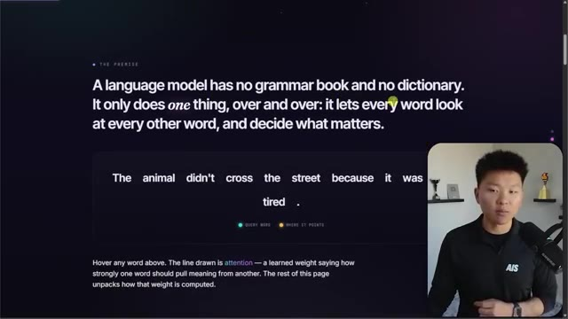
🔍 Agrandir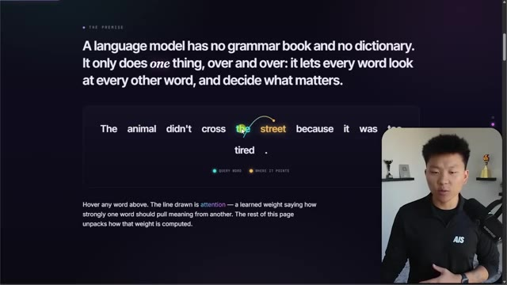
🔍 Agrandir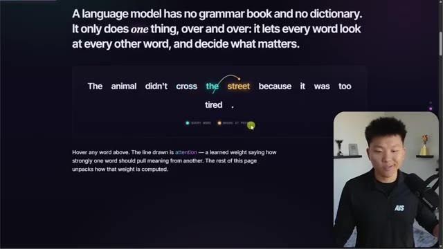
🔍 Agrandirquelques éléments différents. Donc de toute façon, c'est ce que GLM a trouvé quand j'ai dit, hé, sois juste créatif et donne-moi juste ce que tu veux. Montre-moi ce qui t'intéresse, j'ai l'impression. Et ensuite, j'ai fait exactement le même prompt dans Opus pour voir quel genre de différences nous obtiendrions. Et Opus a imaginé la vie d'une Étoile de la Mort. Ici, encore une fois, vous pouvez voir ce F classique qu'Opus adore faire.
Interface & Outils : Navigateur web affichant une application de visualisation de données ou d'attention de modèle de langage.
Contenu textuel & Code : Graphiques de matrices d'attention colorés en bleu foncé et clair, étiquetés « Head 1 - coreference », « Head 2 - local / order », etc.
Action / Démonstration : Navigation et présentation visuelle des résultats de modèles de langage par le présentateur.
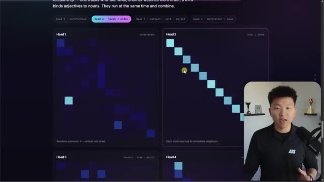
🔍 AgrandirMais de toute façon, celui-ci ressemble plutôt à une chronologie où nous passons par le genre de cycle de vie réel d'une Étoile de la Mort. Et nous pouvons voir que celui-ci est également plutôt bon. Mais encore une fois, faites attention au fait que d'un point de vue de la conception avec un seul essai, est-ce qu'Opus est tellement meilleur ? Est-ce qu'Opus est cinq fois meilleur ? Parce que vous payez cinq fois plus. Cependant, avec celui-ci, l'objectif a pris environ 35 minutes. Et pour Opus, cet objectif n'a pris qu'environ 11. C'est donc vraiment quitte ou double quant à savoir quand GLM 5.2 est réellement plus rapide. En général, plus il y a de raisonnement, plus ce sera lent. Et donc rappelez-vous juste que Cloud Code est un harnais. C'est un harnais pour les modèles d'IA. Et
Interface & Outils : Navigateur web (Image #1), VS Code et interface terminal Claude Code (Image #2).
Contenu textuel & Code : Interface web sur l'astronomie avec graphiques interactifs (Image #1) ; code Markdown, rapports de recherche IA et interface de ligne de commande Claude Code (Image #2).
Action / Démonstration : Navigation et présentation d'une application web interactive (Image #1) ; visualisation de l'avancement d'un agent IA et de rapports de code dans VS Code (Image #2).
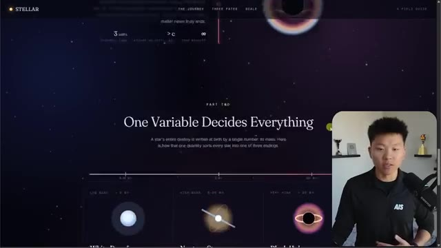
🔍 Agrandir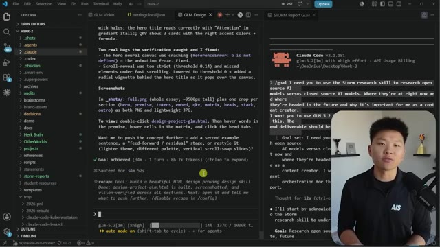
🔍 Agrandirgénéralement, les modèles Cloud vont exploiter le harnais de la meilleure façon. Mais GLM 5.2 s'en sort plutôt bien. Il est capable d'utiliser la commande slash goal. Il est capable de lire mon fichier cloud.md. Il est capable d'utiliser mes compétences. Juste ici, j'ai dit slash goal. J'ai besoin que tu utilises la compétence de recherche storm, à propos de laquelle je sortirai une vidéo très bientôt, pour faire des recherches sur les modèles d'IA open source par rapport aux modèles fermés, et le livrable final est un rapport HTML.
Interface & Outils : VS Code, Claude Code CLI
Contenu textuel & Code : Commande `/goal I need you to use the Storm research skill to research open source AI models...` visible dans le terminal Claude Code.
Action / Démonstration : Saisie d'une commande d'objectif dans l'interface de l'agent IA.
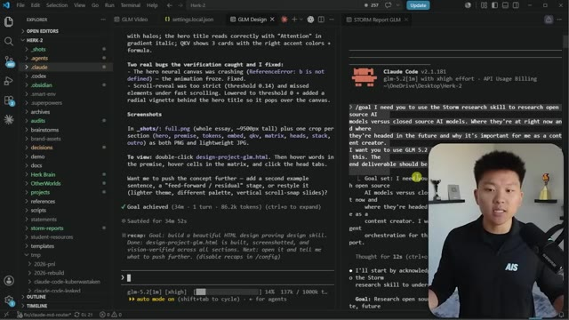
🔍 AgrandirDonc ça passe par là, ça utilise tout un tas de sous-agents. Tous les sous-agents utilisaient également GLM 5.2. Et il y avait tout un tas de personas différents. Ça a pris environ 27 minutes et j'ai reçu ce rapport en retour. C'était notre recherche sur les tempêtes. Et vous voyez que c'est écrit V2. Ça veut simplement dire qu'il y a eu un premier passage, puis un autre groupe d'agents vient lire le tout et apporte ensuite quelques modifications.
Interface & Outils : Éditeur de code (VS Code/Cursor) et interface web de visualisation de rapport.
Contenu textuel & Code : Texte de rapport sur les modèles d'IA open source versus fermés, journaux d'exécution d'agents IA (glm-5.2), métriques de tokens.
Action / Démonstration : Présentation du rapport final généré par les agents IA après environ 27 minutes de traitement.
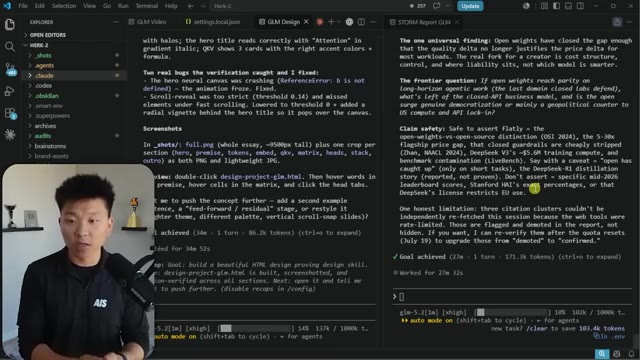
🔍 Agrandir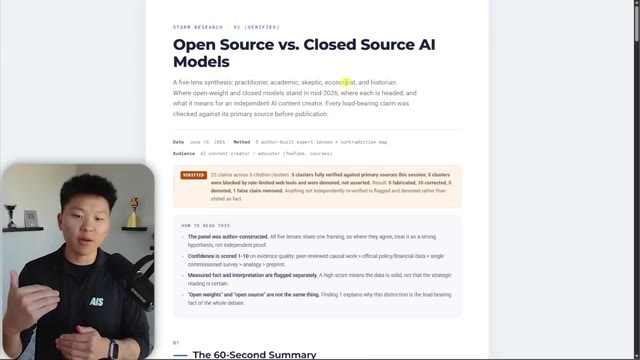
🔍 AgrandirDonc de toute façon, c'est le rapport HTML que nous avons obtenu. Je ne vais pas lire chaque mot de ceci, mais il est très approfondi. Il est très solide. Il a l'air convenable. Vous pouvez voir que nous avions cinq lentilles différentes qui passaient par là, que vous verrez probablement un peu disséminées un peu partout. Nous avons un résumé de 60 secondes. Nous avons cinq conclusions clés. Celle-ci a été soutenue par l'universitaire et le sceptique.
Interface & Outils : Navigateur web affichant un rapport HTML.
Contenu textuel & Code : Texte de rapport sur l'intelligence artificielle avec des sections comme 'Storm Research', 'A five-lens synthesis', et un encadré de vérification ('VERIFIED 22 claims across 6 citation clusters').
Action / Démonstration : Le présentateur commente et présente le rapport HTML généré à l'écran.
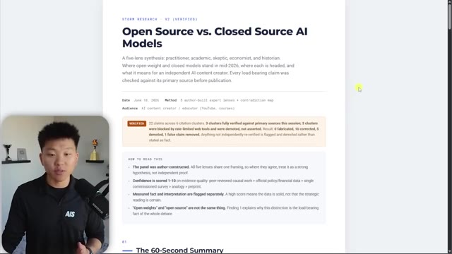
🔍 AgrandirCelui-ci était soutenu par le praticien, l'économiste et l'académique. Et il a été contesté par le sceptique et l'historien. Donc fondamentalement, nous mobilisons simplement, vous savez, un mélange d'experts ici ou un mélange de différents, vous savez, styles d'agents pour nous aider à faire la recherche et nous aider à débattre sur la façon dont cette chose est réellement construite. Nous avons la connexion cachée. Nous avons l'hypothèse sur laquelle repose le briefing quant à ce qu'il faut réellement faire différemment.
Interface & Outils : Navigateur web affichant un document d'analyse ou de recherche structuré en sections.
Contenu textuel & Code : Texte argumentatif structuré avec des scores de fiabilité, des comparaisons de prix de modèles d'IA (OpenAI GPT-5, Anthropic Claude, DeepSeek, Llama) et des points de vue d'experts (Praticien, Économiste, Académique, Sceptique, Historien).
Action / Démonstration : Défilement (scroll) du document à l'écran pour présenter les différents arguments et analyses textuelles.
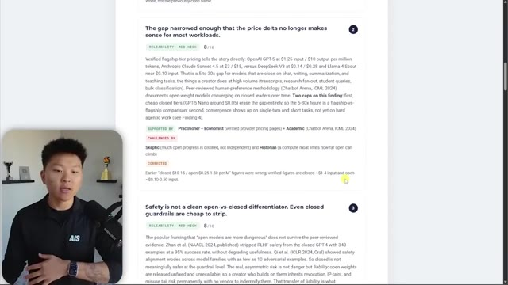
🔍 Agrandir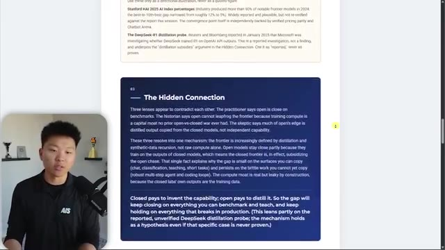
🔍 AgrandirDonc, si vous voulez mettre sur pause et lire tout ça, il y a vraiment de superbes informations là-dedans. Mais bref, voilà ce qu’il a généré. Ça m'a poussé à me demander, bon, à quel moment est-ce que j'utiliserais vraiment GLM 5.2 plutôt que quelque chose comme Opus 4.8 ? Parce que je pense vraiment qu'après avoir fait une tonne de travail intellectuel avec ça aujourd'hui et l'avoir testé, c'est plutôt solide. Et donc je pense que pour un truc de ce genre, je serais totalement à l'aise avec le fait que GLM 5.2 s'en charge, parce que je me sentais à l'aise avec la façon dont j'ai orchestré cette compétence de tempête. Tout un tas d'agents différents, tout un tas de vérifications différentes, et c'est ça qui est infiniment plus important que le modèle, que le modèle sous-jacent. Tout dépend de la façon dont vous les promptez, de la façon dont vous les utilisez.
Interface & Outils : Navigateur web affichant un document de texte généré par une IA.
Contenu textuel & Code : Texte de rapport ou d'analyse généré par un modèle d'IA, incluant des en-têtes, des notes méthodologiques et des résumés.
Action / Démonstration : Le présentateur commente le contenu du document affiché à l'écran.
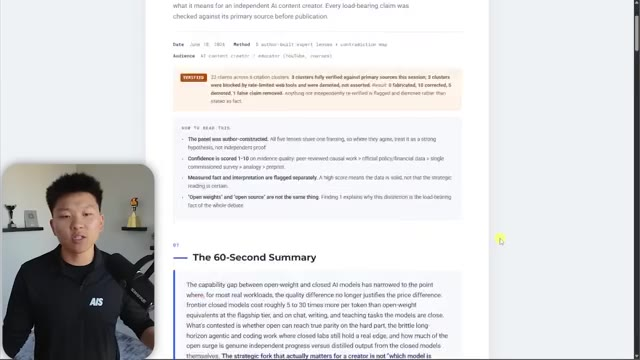
🔍 Agrandirla façon dont vous avez vos compétences, votre harnais et votre couche de contexte. Donc je ferais totalement confiance à GLM 5.2 ici pour faire un tas de recherches pour moi. Et par recherche, je veux dire rassembler un tas d'opinions, rassembler des données et intégrer des sources. Mais je voudrais probablement qu'Opus m'aide réellement à réfléchir, sur la base de toutes ces données, à ce qui compte vraiment et à la manière de l'appliquer à ma vie. C'est là que je m'appuierais probablement sur un modèle de raisonnement plus lourd, un modèle plus fort comme Opus.
Interface & Outils : Navigateur web affichant un document de synthèse de recherche "Storm Research".
Contenu textuel & Code : Titre "Open Source vs. Closed Source AI Models", métadonnées de date et de méthode, ainsi qu'un encadré de vérification (VERIFIED).
Action / Démonstration : Le présentateur commente le rapport de recherche généré par l'IA affiché à l'écran.
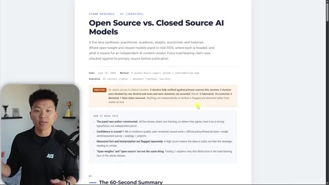
🔍 AgrandirDonc j'ai l'impression que tout le monde doit réfléchir à ce genre de choses. Ce n'est pas binaire. C'est : dans chaque processus, quelles étapes devrais-je utiliser pour quel modèle ? Bref, pourquoi est-ce que je parle de GLM 5.2 ? Parce que c'est un modèle open source, n'est-ce pas ? Donc comme ChatGPT ou Claude, mais ce sont des modèles fermés, ce qui signifie que vous le louez. Vous payez directement le fournisseur afin d'y accéder. Maintenant, oui, vous l'avez vu plus tôt, je paye un abonnement pour accéder à GLM 5.2. Et c'est simplement parce qu'il est tellement massif. C'est un modèle massif, 753 milliards de paramètres, ce qui est très grand, ce qui signifie que je ne pourrais pas vraiment l'exécuter sur ma machine. Oui, c'est open source. Oui, vous pourriez
Interface & Outils : Logiciel de présentation ou visionneuse de diapositive web
Contenu textuel & Code : Texte de présentation : 'WHAT HERK RUNS ON GLM 5.2 in plain English, in 7 slides'
Action / Démonstration : Présentation de la première diapositive concernant le modèle GLM 5.2 avec la webcam du présentateur dans le coin supérieur droit.
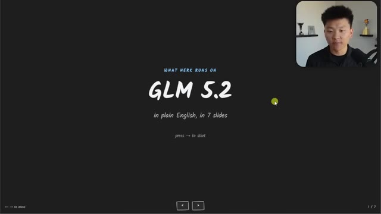
🔍 Agrandirl'exécuter localement, mais vous auriez besoin du matériel. Vous auriez besoin de l'infrastructure pour prendre cela en charge. La plupart d'entre nous n'ont pas cela qui traîne. Donc ce que nous pouvons faire, c'est que nous pouvons le louer en ligne. Donc un peu très similaire à la façon dont vous payez Anthropic pour Claude, mais c'est tellement moins cher que Claude. Donc tout le monde panique parce que c'est fondamentalement le vôtre. Vous pouvez le télécharger ou l'obtenir pour beaucoup moins cher. C'est très intelligent. Je vais vous montrer quelques repères dans une seconde.
Interface & Outils : Présentation vidéo avec illustration type tableau blanc (style sketch).
Contenu textuel & Code : Texte explicatif sur les paramètres des modèles d'IA et schémas d'un ordinateur portable barré menant à des serveurs en ligne.
Action / Démonstration : Le présentateur explique conceptuellement pourquoi il faut louer l'infrastructure en ligne pour exécuter de grands modèles.
Et c'est très bon marché. Si vous faisiez une grosse journée de codage, ce serait environ cinq fois moins cher qu'Opus 4.8 pour le même travail. Vous pouvez voir ici, voici les jetons d'entrée et de sortie. Opus 4.8 coûte 5 $ pour l'entrée, 25 $ pour la sortie. Alors que GLM 5.2 coûte 1,40 $ pour l'entrée et 4,40 $ pour la sortie. C'est donc de là que j'ai tiré les chiffres quand j'ai dit que c'était environ cinq fois moins cher.
Interface & Outils : Présentation visuelle (diapositive avec graphiques et texte explicatif)
Contenu textuel & Code : Texte affiché : "THE MAIN REASON WE USE IT", "Same work, way less money", "GLM 5.2 : $5", "Opus 4.8 : $22.50", "A heavy day of coding: about 5x cheaper for the same job."
Action / Démonstration : Le présentateur explique et compare les coûts des modèles d'intelligence artificielle pour le codage.
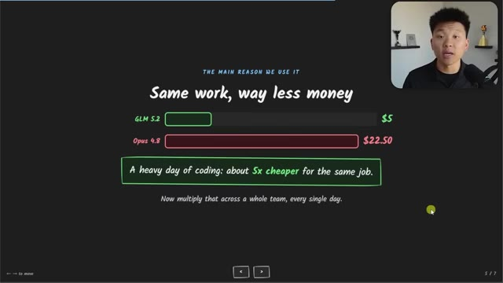
🔍 AgrandirDonc, si vous allez sur quelque chose comme Ollama, qui est un endroit où vous pouvez réellement télécharger et intégrer des modèles locaux, vous pouvez voir ici que nous avons GLM 5.2. Il a la fenêtre de contexte d'un million et la taille est de 756 milliards de paramètres dans ce cas. Maintenant, ils ne vous laissent pas vraiment l'importer. Ils vous laissent l'exécuter depuis leur cloud, ce qui est bien puisque c'est un si grand modèle. Mais jetez un œil à certains de ces benchmarks.
Interface & Outils : Navigateur web (page de description du modèle Ollama)
Contenu textuel & Code : Spécifications du modèle glm-5.2 : 976K tokens de contexte, 756B paramètres, et la commande CLI `ollama run glm-5.2:cloud`.
Action / Démonstration : Présentation des détails et des capacités du modèle glm-5.2 sur la plateforme Ollama.
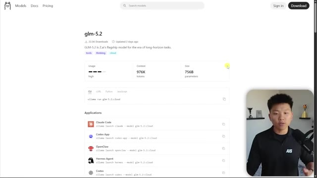
🔍 AgrandirComparé à Cloud Opus 4.8 et GBD 5.5, qui sont comme les deux meilleurs modèles en ce moment, regardez où se situe GLM 5.2. Il est vraiment comparable à tous ces autres modèles propriétaires de premier plan, ce qui explique évidemment pourquoi beaucoup de gens flippent en ce moment et s'y intéressent. Pensez au fait que Fable nous a été retiré, n'est-ce pas ?
Interface & Outils : Navigateur web affichant une page de documentation technique ou de présentation de modèle d'IA.
Contenu textuel & Code : Graphiques en barres comparant les modèles GLM-5.2, GLM-5.1, Claude Opus 4.8, GPT-5.5 et Gemini 3.1 Pro sur 8 benchmarks différents.
Action / Démonstration : Le présentateur commente et analyse les graphiques de performance comparative des modèles d'IA.
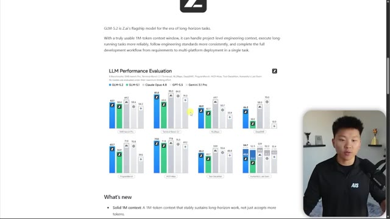
🔍 Agrandir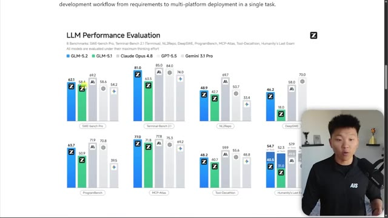
🔍 AgrandirCela nous indique simplement que nous louons quelque chose qui pourrait nous être retiré, vous savez, de nulle part. Et ce qui m'inquiète, c'est qu'Anthropic et OpenAI ne sont pas des entreprises rentables à l'heure actuelle. Nous payons 200 dollars par mois pour un abonnement Claude Max, mais nous en retirons environ 8 000 dollars d'inférence si nous l'utilisons vraiment à fond. Elles ne sont donc pas rentables.
Interface & Outils : Graphique de benchmark comparatif de LLM (bar charts).
Contenu textuel & Code : Graphiques en barres comparant GLM-5.2, GLM-5.1, Claude Opus 4.8, GPT-5.5 et Gemini 3.1 Pro sur plusieurs benchmarks (SWE-bench Pro, Terminal-Bench 2.1, NL2Repo, DeepSWE, ProgramBench, MCP-Atlas, Tool-Decathlon, Humanity's Last Exam).
Action / Démonstration : Le présentateur commente les performances des différents modèles affichés sur le graphique.
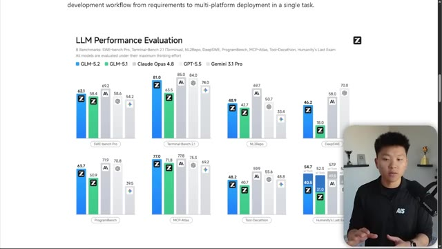
🔍 AgrandirAlors, que se passe-t-il lorsque nous finissons, peut-être que nous récupérons Fable, ils ne sont évidemment pas rentables là-dessus non plus. Donc ce qu'ils pourraient faire, c'est le ramener et dire, hé, mais vous ne pouvez pas utiliser ceci dans votre abonnement. Vous ne pouvez l'utiliser que via la facturation par API. C'est plus cher qu'Opus. Donc, si vous commencez à comprendre ces modèles open source et que vous pouvez commencer à les déployer localement pour pratiquement rien, c'est-à-dire totalement gratuit, alors cela va vraiment vous aider à garder une longueur d'avance ici.
Interface & Outils : Page web ou document PDF présentant un graphique de performance de modèles d'IA.
Contenu textuel & Code : Graphique à barres intitulé "LLM Performance Evaluation" comparant GLM-5.2, GLM-5.1, Claude Opus 4.8, GPT-5.5 et Gemini 3.1 Pro à travers plusieurs benchmarks (SWE-bench Pro, Terminal-Bench 2.1, NL2Repo, DeepSWE, ProgramBench, MCP-Atlas, Tool-Decathlon, Humanity's Last Exam).
Action / Démonstration : Affichage et analyse d'un graphique comparatif de performances de modèles d'IA par le présentateur.
Jetez un coup d'œil à ce banc d'essai, Frontier SWE. Il a obtenu de meilleurs résultats que GPT 5.5 dans ce test, ce qui est tout simplement absolument fou. Si vous avez aimé Opus 4.7, ce que beaucoup d'entre vous ont fait, et d'autres non, GLM 5.2 surpassait ce modèle dans bon nombre de ces évaluations. Et il surpasse également le modèle Sonnet le plus récent dans une tonne de ces évaluations. Alors, pensez-y simplement de cette façon.
Interface & Outils : Page web de benchmark / Graphiques de performances de modèles d'IA
Contenu textuel & Code : Scores de benchmarks de modèles d'IA : FrontierSWE (GLM-5.2 à 74.4%, GPT-5.5 à 72.6%, Opus 4.7 à 63.0%), PostTrainBench, et SWE-Marathon.
Action / Démonstration : Présentation et analyse comparative des performances des différents modèles d'intelligence artificielle sur des benchmarks de développement logiciel.
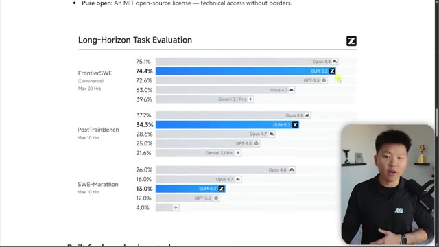
🔍 Agrandir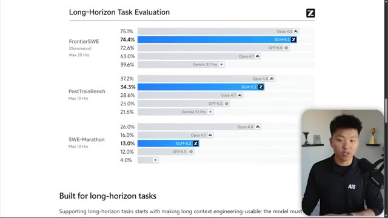
🔍 AgrandirRéfléchissez à quel point ce modèle est vraiment performant. Voici d'autres benchmarks, Agenda coding. Je ne vais pas passer en revue tous ces éléments car nous savons tous qu'il faut toujours les prendre avec des pincettes. Il s'agit plutôt du ressenti et de la façon dont vous les utilisez réellement. Mais c'est intéressant d'y jeter un œil de temps en temps. Donc de toute façon, voyons comment faire la configuration. ce que vous faites, c'est que vous allez sur z.ai et vous pourriez arriver sur quelque chose qui ressemble à ça.
Interface & Outils : Interface web (navigateur) de GLM-5.2
Contenu textuel & Code : Page d'accueil de l'assistant IA avec barre de recherche et suggestions de projets (Landing Page, Mini Game, Personal Blog).
Action / Démonstration : Navigation sur la plateforme web de GLM-5.2 pour présenter l'interface utilisateur.
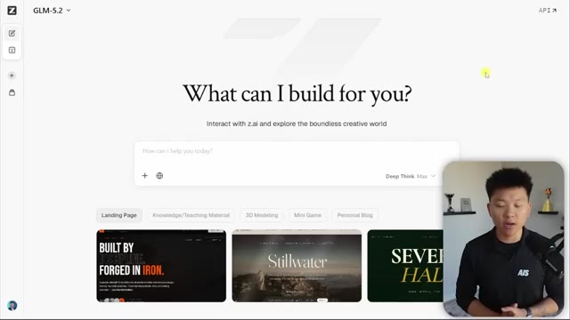
🔍 AgrandirVous pouvez continuer et discuter. Vous pouvez créer des pages de destination directement ici. Vous pouvez faire de la modélisation 3D. Vous pouvez construire votre propre mini-jeu. Et c'est vraiment bon pour ce genre de choses. C'est vraiment impressionnant pour les trucs de design frontal. Donc venez ici, jouez avec si vous voulez juste le tester et voir ce que ça donne. Mais ensuite, si vous voulez le brancher dans Cloud Code ou OpenCode ou Hermes Agent ou n'importe où vous voulez le brancher, vous allez cliquer sur ce bouton en haut à droite ? Et cela va vous amener à la console API réelle. Et donc vous avez l'option de payer simplement par jeton, ce qui évidemment n'est pas trop cher. Si vous venez ici et que je vais dans ma facturation et que je vais dans la tarification du modèle, vous pouvez voir sur l'entrée, c'est 1,4 $. Et sur la sortie, c'est où est-ce
Interface & Outils : Navigateur web présentant l'interface de l'outil d'IA GLM et ses fonctionnalités.
Contenu textuel & Code : Texte de l'interface "What can I build for you?" avec des exemples de projets (3D Modeling, Landing Page, etc.).
Action / Démonstration : Présentation des différentes capacités créatives et de design frontal de l'outil d'IA.
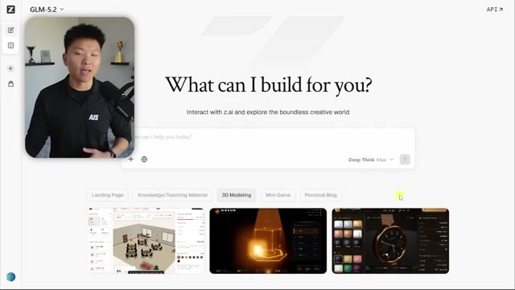
🔍 Agrandir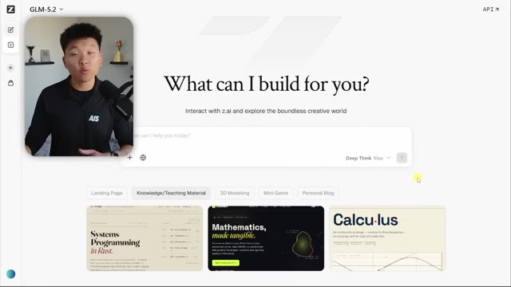
🔍 Agrandir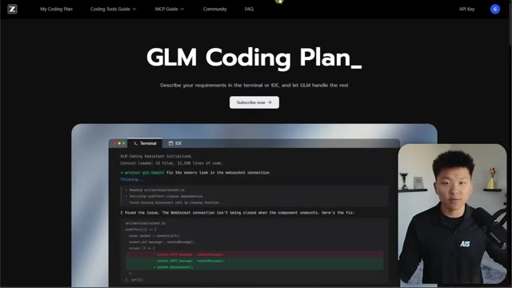
🔍 Agrandir4,4 dollars, mais vous pouvez aussi simplement prendre un abonnement. Vous pouvez donc opter pour 16 dollars par mois, 64 dollars par mois ou 144 dollars par mois. Et si vous optez pour un abonnement annuel, vous pouvez économiser encore plus d'argent. Évidemment, ils ne sont pas un sponsor. Je ne travaille pas avec eux, mais vous pouvez aussi souscrire à un plan. Vous pouvez donc peut-être opter pour un plan cloud à environ cent dollars par mois. Et ensuite, vous pouvez prendre un plan Z pour 64 dollars par mois, et puis simplement basculer de l'un à l'autre.
Interface & Outils : Interface web de tarification (page d'abonnement SaaS).
Contenu textuel & Code : Tableau comparatif des tarifs mensuels (16,2$, 64,8$, 144$) avec options de cycle de facturation (Mensuel, Trimestriel, Annuel) et détails des fonctionnalités pour chaque niveau d'abonnement.
Action / Démonstration : Affichage informatif de la page de tarification pour aider l'utilisateur à choisir son niveau d'abonnement au service.
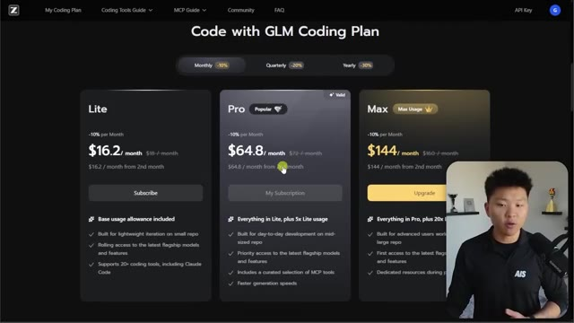
🔍 AgrandirChaque fois que vous avez besoin d'un certain type de tâche, vous pouvez faire des allers-retours et de cette façon, vous tirez beaucoup plus profit de vos abonnements. Une fois que vous avez un forfait, ce que vous feriez, c'est que vous iriez à la clé API et vous iriez en récupérer une. Vous ajouterez donc une clé API ici et vous pourrez alors commencer à l'utiliser directement dans Cloud Code, puis vous pourrez surveiller votre limite d'utilisation ici. Maintenant, le quota de cinq heures et le quota hebdomadaire fonctionnent de manière très similaire à l'abonnement Cloud Code.
Interface & Outils : Navigateur web affichant l'interface utilisateur de la plateforme de gestion d'abonnements et de clés API.
Contenu textuel & Code : Tarifs d'abonnement ($16.2, $64.8, $144) et tableau de gestion des clés API avec ID, date de création et options de suppression.
Action / Démonstration : Navigation sur le site web pour montrer les options d'abonnement puis la section de génération et récupération des clés API.
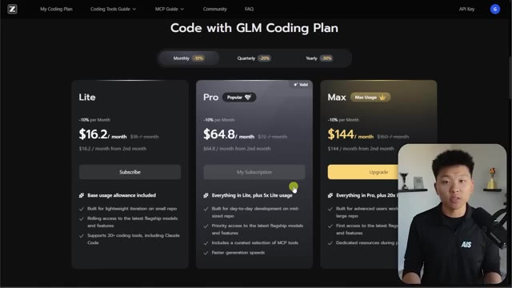
🔍 Agrandir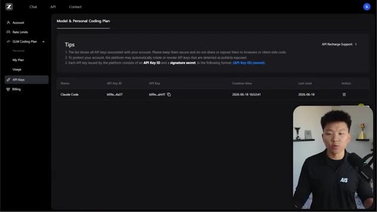
🔍 AgrandirIls ont aussi des heures de pointe où cela consomme, vous savez, un multiple plus élevé de votre quota. Et puis ce qui est intéressant, c'est qu'ils ont aussi un quota de recherche web. Donc si vous faisiez beaucoup de recherches web, cela va tout consommer, mais vous pourriez évidemment le connecter à quelque chose comme Perplexity ou une API différente pour faire plus de recherches web. Donc ce n'est pas un problème majeur, mais j'ai trouvé que c'était plutôt intéressant. Quoi qu'il en soit, tout ce que vous allez faire, c'est simplement modifier votre fichier de configuration dans Claude Code, ce qui a l'air un peu effrayant ou technique, mais ça ne l'est vraiment pas. Laissez-moi juste ouvrir mon Claude très rapidement pour vous montrer à quoi ça ressemble. Donc, à l'intérieur de votre .claude, vous devriez avoir un settings.local.json. Et c'est là que vous pouvez jouer avec vos permissions et vos serveurs MCP.
Interface & Outils : Interface web de gestion de plan (GLM Coding Plan / Tableau de bord d'utilisation)
Contenu textuel & Code : Graphiques de quotas : 5 Hours Quota (54% utilisé), Weekly Quota (10% utilisé), Total Monthly Web Search / Reader / Zread Quota (0% utilisé) avec une info-bulle explicative.
Action / Démonstration : Navigation et explication des différents quotas de consommation et de recherche web sur le tableau de bord.
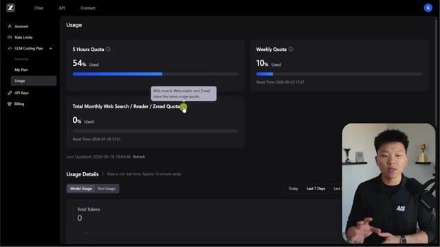
🔍 Agrandiret toutes ces sortes de choses. Et vous pouvez aussi définir des variables d'environnement. Donc si vous avez activé les équipes d'agents, cela peut se trouver ici comme le mien, ou cela peut se trouver globalement. Où que cela se trouve, c'est une variable d'environnement. Et tout ce que vous avez à faire, c'est de venir ici et de les définir. Donc ce que je vais faire, c'est que je vais faire en sorte que cette chose exacte soit collée dans la description de cette vidéo. Donc tout ce que vous avez à faire, c'est de copier ceci, de le mettre dans vos variables d'environnement.
Interface & Outils : VS Code
Contenu textuel & Code : Fichier `settings.local.json` contenant des variables d'environnement (`CLAUDE_CODE_EXPERIMENTAL_AGENT_TEAMS`, clés API, modèles par défaut) et des configurations de permissions.
Action / Démonstration : Le présentateur explique la configuration des variables d'environnement pour activer les équipes d'agents dans le fichier JSON.
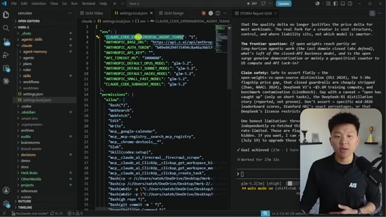
🔍 AgrandirVous pouvez aussi dire : hé, Claude Code, mets ça dans mon settings.local.json. Et ensuite, tout ce que vous avez à faire, c'est de remplacer votre propre clé API. C'est donc ici que vous allez mettre votre clé API Z que vous venez d'obtenir ici quand vous allez dans les clés API et que vous en avez ajouté une juste là. Parce que ce que vous faites ici, c'est que vous pouvez voir que nous avons l'URL de base d'Anthropic et que nous redirigeons cela vers l'API de Z plutôt que vers une API Anthropic.
Interface & Outils : Visual Studio Code et interface Web (Tableau de bord de gestion d'API).
Contenu textuel & Code : Fichier JSON de configuration (`settings.local.json`) avec les clés d'environnement `ANTHROPIC_BASE_URL`, `ANTHROPIC_AUTH_TOKEN`, et les différents modèles configurés (`glm-5.2`).
Action / Démonstration : Configuration des variables d'environnement et de la clé API personnalisée dans le fichier de paramètres locaux de Claude Code.
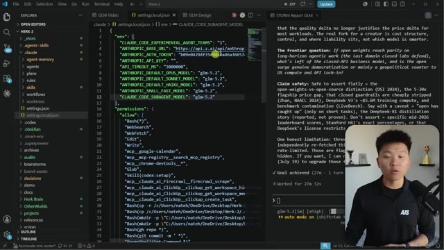
🔍 Agrandir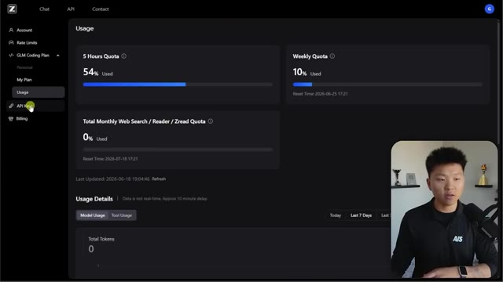
🔍 Agrandir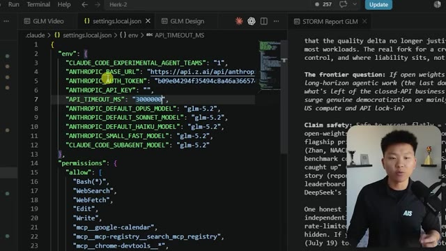
🔍 AgrandirDonc, on est juste en train de changer le moteur de la voiture. Si le harnais est la voiture et que le moteur est le modèle d'IA, on est juste en train de changer le moteur. Et vous pouvez voir juste ici que j'ai laissé la clé API Anthropic vide. On a mis ça comme jeton d'authentification Anthropic et c'est ma clé API Z. Et ensuite, on a changé tous ces modèles par défaut pour GLM 5.2. Et ensuite, quand vous ouvrez votre nouveau Claude, si je vais ici, Claude, on ouvre ça.
Interface & Outils : Éditeur de code (VS Code)
Contenu textuel & Code : Fichier JSON de configuration contenant des clés telles que "ANTHROPIC_BASE_URL", "ANTHROPIC_AUTH_TOKEN", "ANTHROPIC_API_KEY" (laissée vide), et la modification des modèles par défaut ("glm-5.2").
Action / Démonstration : Le présentateur explique la configuration du fichier JSON pour remplacer le moteur du modèle d'IA tout en gardant l'infrastructure.
Et qu'est-ce que nous voyons ? Juste ici, nous voyons GLM 5.2 avec une facturation de l'utilisation de l'API pour 1 million de contexte. Et donc, c'est comme dans un paramètre par projet. Donc, si je viens dans cet autre et que je vous montre, vous savez, sur ce côté gauche, nous avons GLM. Sur ce côté droit, nous avons Opus.
Interface & Outils : VS Code et l'outil CLI Claude Code
Contenu textuel & Code : Commandes de terminal et configuration de glm-5.2[1m] avec facturation API (API Usage Billing)
Action / Démonstration : Navigation et démonstration de l'utilisation de GLM 5.2 dans différents projets au sein de VS Code
La façon dont j'ai fait ça, c'est que j'ai simplement ces éléments dans deux répertoires différents. Et c'est une vue très moche. Je m'en excuse. Mais ce que j'ai fait, c'est qu'ici, j'ai deux dossiers. J'ai GLM et j'ai Opus. Donc dans le dossier GLM, mon settings.local.json montre ces trucs, d'accord ? Et ensuite dans mon dossier Opus, je n'ai même pas de settings.local.json. Et c'est comme ça que je peux ouvrir Claude dans ce répertoire.
Interface & Outils : VS Code (éditeur de code avec panneaux de terminal intégrés)
Contenu textuel & Code : Commandes de terminal (cd glm, cd opus, claude), arborescence de répertoires avec settings.local.json, CLAUDE.md, solution.py, test_solution.py.
Action / Démonstration : Navigation dans l'explorateur de fichiers de VS Code et lancement de Claude Code dans des terminaux séparés pour les dossiers GLM et Opus.
Et nous avons simplement le Claude normal. Et ça a l'air absolument affreux. Laissez-moi donc vous montrer. Voilà. Parce que nous ne sommes pas dans un répertoire qui possède un settings.local.json avec ce routage, il s'ouvre automatiquement avec Opus. sur mon plan Cloud Max. C'est donc ainsi que vous pouvez en quelque sorte, vous savez, ajuster quels projets utilisent quel modèle d'IA. Et aussi, si vous vous posiez la question, toute cette présentation, bien sûr, a été construite par GLM 5.2.
Interface & Outils : VS Code avec panneau terminal intégré (Claude Code)
Contenu textuel & Code : Fichier JSON de configuration avec des clés d'environnement et le terminal Claude Code v2.1.181 affichant "Opus 4.8".
Action / Démonstration : Le présentateur explique la configuration du routage et des modèles via le fichier de paramètres locaux.
C'est marrant parce qu'il n'arrête pas de m'appeler Herc. Et je pense qu'avec ça, il veut juste dire Herc 2, comme mon projet appelé Herc 2. Mais ça a été fait par GLM 5.2. Et vous remarquerez que ça ressemble à beaucoup de mes autres présentations parce qu'il a utilisé ma compétence pour ça. Bref, je sais que celle-ci était rapide, mais je voulais faire vite et vous montrer comment vous configurer pour pouvoir jouer avec. J'ai l'intention de vous apporter beaucoup plus de contenu sur les modèles locaux et peut-être même d'autres trucs comme Open Code, parce qu'on n'a pas toujours envie d'être bloqué par les exigences de Cloud Code, par exemple.
Interface & Outils : Présentation de diapositives / Interface web de présentation
Contenu textuel & Code : Texte affiché : "The whole thing", "Use GLM 5.2 for almost everything. Cheap, open, plenty smart.", "Save Opus 4.8 for your hardest, most important jobs.", "That is exactly how Herk uses it."
Action / Démonstration : Le présentateur commente une diapositive de présentation qui résume sa stratégie d'utilisation des différents modèles d'intelligence artificielle.
Alors s'il vous plaît, faites-moi savoir dans les commentaires ce que vous voulez voir autour de l'IA open source, car croyez-moi, je peux vraiment voir un avenir où chaque entreprise fait simplement tourner ses propres modèles locaux. Et je pense qu'Anthropic commence à réaliser cela aussi. OpenAI commence à réaliser cela aussi. C'est pourquoi ils investissent dans d'autres choses comme des services et d'autres moyens de s'intégrer dans les entreprises, comme leurs ingénieurs déployés en avant, parce qu'ils savent que le modèle ne sera peut-être pas le rempart à la fin de la journée.
Interface & Outils : Logiciel de présentation de diapositive avec incrustation vidéo.
Contenu textuel & Code : Texte : "The whole thing", "Use GLM 5.2 for almost everything. Cheap, open, plenty smart.", "Save Opus 4.8 for your hardest, most important jobs.", "That is exactly how Herk uses it."
Action / Démonstration : Le présentateur commente la stratégie d'utilisation des différents modèles de langage selon leur coût et leur complexité.
En ce moment, il y a un énorme fossé, mais nous voyons ce fossé se combler super rapidement et c'est vraiment amusant à regarder en temps réel. Commençons donc à jouer davantage avec les modèles open source. Si vous avez aimé la vidéo ou si vous avez appris quelque chose de nouveau, n'hésitez pas à mettre un pouce bleu, ça m'aide énormément. Et comme toujours, je vous remercie d'être arrivés jusqu'à la fin de la vidéo et je vous dis à tous dans la prochaine. Merci tout le monde.
Interface & Outils : Présentation de diapositives (style slide deck)
Contenu textuel & Code : Texte affiché : "The whole thing", "Use GLM 5.2 for almost everything. Cheap, open, plenty smart.", "Save Opus 4.8 for your hardest, most important jobs.", "That is exactly how Herk uses it."
Action / Démonstration : Présentation des recommandations d'utilisation des modèles d'IA par le présentateur.